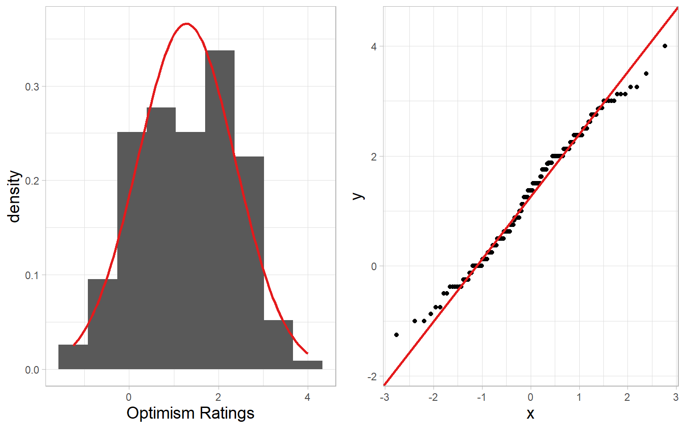
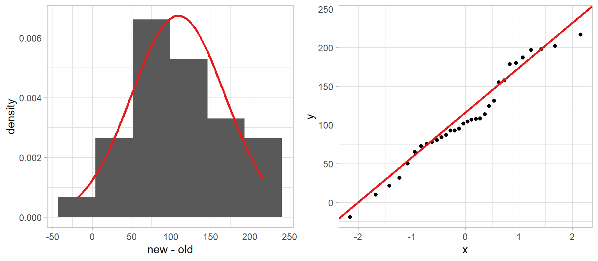
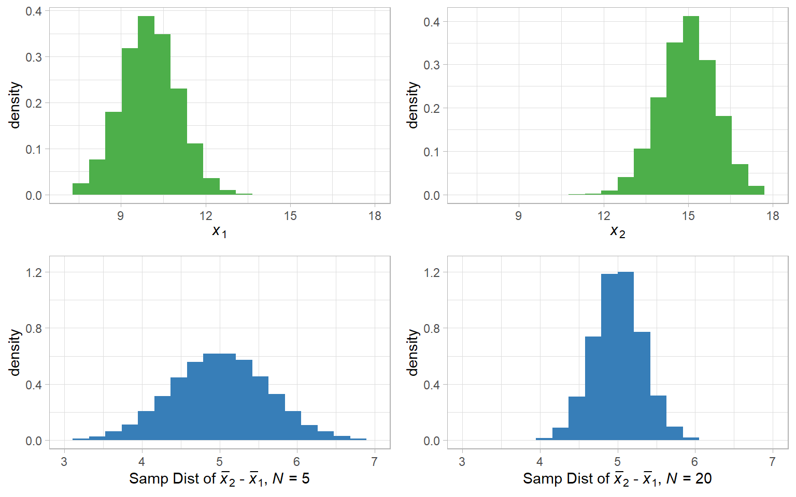
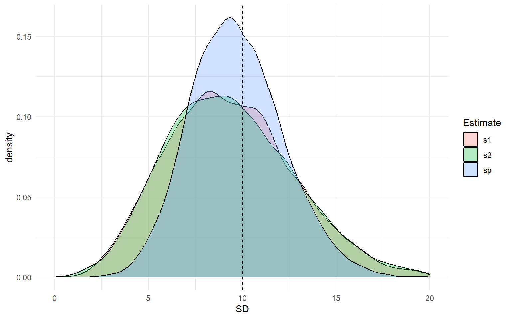

Lecture 9: More You Can Do with t
Last Time
We learned all about the beauty of the \(t\)-distribution
- Like the normal distribution, but with fatter tails
- Accounts for additional noise (uncertainty) that crops up because we are estimating the population variance, instead of knowing it for sure
- Fatness of tails is proportional to the degrees of freedom (\(df\))
Today we will discuss
- Assumptions
- Point estimates vs. confidence intervals
- More practical use cases for \(t\)-tests
Assumptions of a \(t\)-test
- The sampling distribution follows a normal distribution
- If \(N\) is large enough, the CLT will take care of this for us! But the more normal the data is, the more normal our sampling distribution, so we can explore the data for extra peace of mind
- The observations are independent
- Make sure no datapoints come from the same person or clusters that are somehow related
- There are no outliers
- Influential data points that are not from our population
- We should only remove points if we have reason to believe they come from a different population, not just because they stand out somehow
- Sampling was random
- We rely on research design for this!
How might we check these?
Numerical Normality Checks
- Skewness & kurtosis
- Both = 0 in a normal distribution
- Kolmogorov-Smirnov (KS) test, Shapiro-Wilk (Shapiro) test
- Hypothesis tests of whether sample distribution is significantly different from a (population) normal distribution (null hypothesis = normality)
- Sensitive to \(N\) (tend to always reject if \(N\) is big, retain if \(N\) is small)
- Shapiro-Wilk more powerful than Kolmogorov-Smirnov
Graphical Normality Checks
- Histograms/density plots
- Quantile-quantile (QQ) plots
- \(x\) axis: theoretical quantiles of the normal distribution
- \(y\) axis: quantiles of the data
- If normal, points should fall in a straight line
QQ Plot (Normal)

QQ Plot (Not)

QQ Plot (NBA Data)

Not great!
QQ Plot (Optimism Data)

Not bad!
Skewness and Kurtosis
The e1071 package has functions for skewness and kurtosis. These provide descriptive numerical checks about deviations from normal (~0 is normal)
Shapiro and KS Tests
Interpretations
Rejecting the null in the Shapiro or KS tests is evidence against normality
- Remember: This is evidence the data is non-normal. Sampling distribution still might be fine if \(N\) is large enough (hard to quantify with precision)
General recommendation:
- Graphical evaluation \(>\) these tests \(>\) numerical evaluation
- Collect enough data so it doesn’t matter anyway where possible!
Confidence Interval
Sample mean is the point estimate of the population mean
- Single value that will minimize our (squared) error to population mean
- Minimize “loss function” (squared error)
Confidence interval gives an interval estimate.
Definition of a confidence interval: range for which any random sample from the population will contain \(\mu\) with probability \(1 - \alpha\).
if \(\alpha = .05\), we have a 95% confidence interval.
Interpretation:
95% of intervals (across repeated samples) will contain \(\mu\)
If we treated any value inside the 95% confidence interval as the null, we could not reject it at \(\alpha = .05\)
20 Confidence Intervals

General Procedure
- Find the critical values of our reference distribution
- Discussed these briefly last week
- Values on the distribution such that 2.5% is in the left tail and 2.5% in the right tail for \(\alpha = .05\)
- Transform these values back onto the scale of the original variable using the sample mean and standard error (\(s_{\bar{x}}\)). How do we do this?
Lower limit of \(\mu\): \(\bar{x} - \text{Critical Value} \times s_{\bar{x}}\)
Upper limit of \(\mu\): \(\bar{x} + \text{Critical Value} \times s_{\bar{x}}\)
This procedure corresponds to a two-tailed test
NBA Example
- \(N = 44\)
- \(\bar{x} = 14.5\)
- \(s = 6\)
- \(s_{\bar{x}} = \frac{6}{\sqrt{44}} = 0.90\)
- \(df = N - 1 = 43\)
Like pt(), the qt() function is also a way of “looking up” values on a \(t\)-table, but for finding the critical values for a given \(\alpha\) level rather than \(p\)-values for a sample mean. For a \(t\)-test, we can find the critical values as:
Why did I set \(p = \frac{.05}{2}\)?
For a two-tailed test, we want 2.5% of the distribution in both the lowr and upper tails
\(95\% \text{CI} = 14.5 \pm 2.016 \times 0.90 = [12.69, 16.31]\)
NBA Example Visual

IMPORTANT
We are not claiming the plot on the right is the “true” sampling distribution
- 95% confidence intervals will vary sample to sample
- The true parameter does not vary, it is a single fixed value
- If our assumptions hold, what we guarantee is that if we repeatedly collect samples and estimate a 95% confidence interval (different in every sample), they will contain \(\mu\) 95% of the time
We can also say:
- Any value inside the 95% confidence interval would be retained if it were the null hypothesis
- Any value outside the 95% confidence interval would be rejected if it were the null hypothesis
Comparing Two Means
We’ve motivated the \(t\)-test by considering a case where
- We have a hypothesis about a single population mean
- We want to test whether our sample is consistent with that hypothesis
But what if we want to compare two means?
- Changes in one group over time
- Differences in paired observations
- Differences between experiment and control groups
- Differences in different existing groups
Paired Samples \(t\)-Test
The one-sample \(t\)-test assumes independent observations
Some ways that independence can be violated:
Measuring the same person more than once
Measuring clusters of people
The paired (matched, repeated) samples \(t\)-test “builds in” a dependence structure:
Variable measured at two time points for the same \(N\) persons
Variable measured for pairs of subjects (younger/older siblings, husband/wife pairs)
For the paired samples \(t\)-test, all observations are paired
Take difference scores (\(D\)) for each pair of observations
- A paired samples \(t\)-test is equivalent to a one sample \(t\)-test on difference scores
Example
Original Study:
Berry, C. J., Shanks, D. R., & Henson, R. N. A. (2008). A single-system account of the relationship between priming, recognition, and fluency. Journal of Experimental Psychology: Learning, Memory, and Cognition, 34, 97-111.
Replication study link: https://osf.io/cbwgj/
Study phase: Subjects were shown a series of words, and were instructed to click the mouse as soon as they could identify the word correctly
Test phase: Subjects were shown another series of words and were asked to judge whether the word was “new” (not in the study phase) or “old” (already presented in the study phase)
Research Question: Are response times to old items judged as new (misses) different from new items judged as new (correct rejections)
\(N = 32\) subjects, 32 pairs of observations
\[H_0: \mu_{\text{old}} = \mu_{\text{new}} \text{ or } \mu_{\text{new}} - \mu_{\text{old}} = 0\] \[H_a: \mu_{\text{old}} \neq \mu_{\text{new}} \text{ or } \mu_{\text{new}} - \mu_{\text{old}} \neq 0\]
The Nil Hypothesis
This is an example of the test of a nil hypothesis
- There is no difference between old and new
Setting the null hypothesis to a difference of zero is so common it has it’s own term! But really null hypothesis could be anything
- You could test \(H_0: \mu_{\text{new}} - \mu_{\text{old}} = 5\) If you wanted!
- It is just unusual that a difference of 5 would have any special significance
- The nil hypothesis is a way to determine test for differences in general, which is often something we are interested in
Scope
Two groups where individual observations are matched across groups
Same individuals observed on two occasions/conditions
Pairs of individuals that are related in some way
Consider difference scores \(D_{1} = x_1 - y_2, \ldots, D_{N} = x_n - y_n\) for \(N\) pairs
Null (nil) Hypothesis:
\[H_0: \mu_{D} = \mu_0 = 0\]
Sampling Distribution
Test statistic:
\[t_{\bar{D}} = \frac{\bar{D} - \mu_0}{s_{D} / \sqrt{N}}\]
Reference distribution:
\[t \text{ with } df = N-1\]
- \(N\) is the number of pairs
Our Data
This data is in .sav format (comes from an SPSS file). The haven package has a function that lets us read .sav files into R
This dataset already has the variable priming_effect defined for us as:
\[\text{priming\_effect} = \text{mRT\_new\_items} - \text{mRT\_old\_items}\]
Evaluating Normality

Smaller number of observations, but not terribly non-normal, move forward
Sample Statistics
Sample mean of differences \(\bar{D}\):
Sample SD of differences \(S_D\):
Sample standard error of the mean differences \(S_\bar{D}\):
Test Statistic
\(t\) statistic \(t_D = \frac{\bar{D} - \mu_0}{S_{\bar{D}}}\)
Two-tailed \(p\)-value with \(df = 32 - 1 = 31\)
95% Confidence Interval
Just like the one sample case, we calculate a 95% confidence interval as
\[95\% \text{ CI} = \bar{D} \pm \text{Critical Value} \times S_{\bar{D}}\]
First we need to know our critical value (\(t_{crit}\))
Then we plug into our formula
\[95\% \text{ CI} = 108.88 \pm 2.04 \times 59.21 = [87.53, 130.23]\]
Conclusion:
What important value can we reject based on this confidence interval?
- \(\mu_{D} = 0\)
Using R (way 1)
We can equivalently either reference the two variables mRT_new_items and mRT_new_items separately and specify paired = TRUE
Using R (way 2)
Or we can do a one-sample test on the difference score
APA Writeup
For every participant, priming was calculated as the mean response time for new items minus the mean response time for old items. Using \(\alpha = .05\), priming was significantly greater than zero overall, \(t(31) = 10.40, p < .001\), indicating that the old items were identified more quickly at test than new items (\(\bar{D} = 108.9\rm{ms, 95\%}\) \(\rm{CI = [87.5, 130.2]).}\)
Independent Groups
In many cases, we may want to test whether two independently sampled groups have the same population mean
- Randomized experiments in which different groups get different treatments
- Does a new experimental drug lead to better patient outcomes than a control?
- Differences in pre-existing groups
- Do people with PhDs in psychology have higher average career earnings than people with PhDs in anthropology?
\[H_0: \mu_1 = \mu_2 \text{ OR } \mu_1 - \mu_2 = 0\] \[H_a: \mu_1 \neq \mu_2 \text{ OR } \mu_1 - \mu_2 \neq 0\]
Now we must consider the sampling distribution of the means of two separate (unpaired) groups: \(\bar{x_1} - \bar{x_2}\)
Sampling Differences
If both \(x_1\) and \(x_2\) are normally distributed:

The sampling distribution of mean differences will be normal
A New Assumption
An independent sample \(t\)-test has the same assumptions we’ve already established
- Normality of sampling distribution (prior slide)
- Independence of observations
- No outliers
- Random sampling
Plus one new one:
- Homogeneity of Variance: Even if the populations have different means, they have the same variance (SD) around those means
- We assume in the population both groups have the same variance: \(\sigma^2_1 = \sigma^2_2\)
Pooled Variance
Sample variances will differ (even if homogeneity holds) just due to sampling variation. To get the best estimate of the shared population variance, we need to pool (average) them
Pooled variance (\(s^2_p\)): estimate of the common population variance
\[s^2_p = \frac{(n_1 - 1)s^2_1 + (n_2 - 1)s^2_2}{n_1 + n_2 - 2}\]
- Weighted average of the two sample variances
- \(n_1\): sample size for group 1 (lower-case \(n\) for group sample size)
- \(n_2\): sample size for group 2
- \(s^2_1\): sample variance for group 1
- \(s^2_2\): sample variance for group 2
\(s_p = \sqrt{s^2_p}\) is the pooled standard deviation
Homogeneity Example
Homogeneity of variance: two populations have the same variance, even if they have different means. Example:
\[\text{Population}_1 \sim \text{Normal}(10, 10) \ \ \text{Population}_2 \sim \text{Normal}(5, 10)\]
Notice that both populations have different means but equal standard deviations (\(\text{variance} = \text{standard deviation}^2\))
- \(\mu_1 = 10 \neq \mu_2 = 5\)
- \(\sigma_1 = \sigma_2 = \sigma = 10\)
Let’s simulate 10,000 samples of \(N = 5\) from each population and calculate \(s_1\), \(s_2\), and \(s_p\). Which do you think will be closest to the true \(\sigma = 10\) on average?
Simulated Homogeneity
mu1 <- 10
mu2 <- 5
sigma1 <- sigma2 <- 10
N <- 5
samples <- 10000
## Create empty data frame to save results
sd_estimates <- data.frame(s1 = rep(NA, samples),
s2 = rep(NA, samples),
sp = rep(NA, samples))
set.seed(4441)
for(i in 1:samples){
## Draw samples
sample1 <- rnorm(n = N, mean = mu1, sd = sigma1)
sample2 <- rnorm(n = N, mean = mu2, sd = sigma2)
## Calculate SDs
s1 <- sd(sample1)
s2 <- sd(sample2)
s2p <- ((N - 1) * s1^2 + (N - 1) * s2^2)/(N + N - 2) # pooled variance
sp <- sqrt(s2p) # pooled sd
## Save SDs
sd_estimates$s1[i] <- s1
sd_estimates$s2[i] <- s2
sd_estimates$sp[i] <- sp
}
head(sd_estimates)Visualized Estimates

Even though the groups have different means, \(s_p\) is doing a better job of estimating \(\sigma\) than either \(s_1\) or \(s_2\) because both groups have the same standard deviation. So by pooling them, we double the sample size used to estimate \(\sigma\).
Test Statistic
\[t_{\bar{x}_1 - \bar{x}_2} = \frac{\bar{x}_1 - \bar{x}_2 }{s_{\bar{x}_2 - \bar{x}_2}}\]
Where
\[s_{\bar{x}_2 - \bar{x}_2} = s_p \sqrt{\frac{1}{n_1} + \frac{1}{n_2}} = \sqrt{\frac{s_p^2}{n_1} + \frac{s_p^2}{n_2}}\]
Is our pooled standard error
- Takes into account differences in group sample sizes
Reference distribution:
\[t \text{ with } df = n_1 + n_2 -2\]
Example
Original Study:
McCrea, S. M. (2008). Self-handicapping, excuse making, and counterfactual thinking: Consequences for self-esteem and future motivation. Journal of Personality and Social Psychology, 2, 274-292.
Replication study link: https://osf.io/2kjgz
Step 1: Subject took a math exam and were told that they scored in the 35th percentile of university students
Step 2: Subjects saw statements supposedly written by previous participants
Self-handicap group: half of statements indicated that more practice would have improved their performance, half of statements were neutral
Control group: all statements were neutral
Step 3: Subjects took a second surprise math exam
Research Question
Were scores different on the second exam between the self-handicap and control groups?
\(n_{\text{self-handicap}} = 32\), \(n_{\text{control}} = 29\)
\[H_0: \mu_{\text{self-handicap}} = \mu_{\text{control}}\] \[H_a: \mu_{\text{self-handicap}} \neq \mu_{\text{control}}\]
or, written another way:
\[H_0: \mu_{\text{self-handicap}} - \mu_{\text{control}} = 0\] \[H_a: \mu_{\text{self-handicap}} - \mu_{\text{control}} \neq 0\]
Reading in Data
Variables of interest
Condis experimental condition- I’m going to recode this variable to have descriptive names first
percentis the percent of items corrrect on the second test
Rows: 61
Columns: 32
$ Subject <int> 12, 9, 1, 5044, 6, 11, 1, 16, 1, 20, 22,…
$ Cond <fct> self-handicap, self-handicap, self-handi…
$ Attempted <int> 25, 25, 16, 5, 7, 15, 21, 5, 8, 10, 7, 2…
$ Correct <int> 7, 3, 9, 2, 4, 4, 9, 1, 5, 5, 4, 6, 3, 1…
$ percent <dbl> 0.2800000, 0.1200000, 0.5625000, 0.40000…
$ Date <chr> "11/10/2014", "11/10/2014", "10/29/2014"…
$ Time <chr> "18:20:58", "12:17:23", "13:29:11", "13:…
$ SMT1 <chr> "c", "c", "c", "c", "c", "c", "c", "c", …
$ SMT2 <chr> "x", "x", "x", "c", "x", "x", "x", "x", …
$ SMT3 <chr> "ok", "ok", "ok", "ok", "c", "ok", "ok",…
$ SMT4 <chr> "ok", "ok", "ok", "ok", "c", "ok", "ok",…
$ SMT5 <chr> "ok", "ok", "c", "ok", "c", "ok", "c", "…
$ SMT6 <chr> "c", "ok", "c", "99", "ok", "ok", "ok", …
$ SMT7 <chr> "ok", "ok", "c", "99", "ok", "ok", "ok",…
$ SMT8 <chr> "c", "3", "c", "99", "99", "3", "c", "99…
$ SMT9 <chr> "4", "1", "c", "99", "99", "c", "c", "99…
$ SMT10 <chr> "3", "3", "3", "99", "99", "c", "3", "99…
$ SMT11 <chr> "1", "4", "c", "99", "99", "1", "c", "99…
$ SMT12 <chr> "3", "2", "3", "99", "99", "3", "2", "99…
$ SMT13 <chr> "3", "2", "4", "99", "99", "3", "2", "99…
$ SMT14 <int> 2, 4, 2, 99, 99, 1, 3, 99, 99, 99, 99, 4…
$ SMT15 <chr> "c", "3", "c", "99", "99", "c", "c", "99…
$ SMT16 <chr> "c", "1", "c", "99", "99", "99", "c", "9…
$ SMT17 <chr> "ok", "ok", "99", "99", "99", "99", "ok"…
$ SMT18 <chr> "ok", "ok", "99", "99", "99", "99", "c",…
$ SMT19 <int> 4, 2, 99, 99, 99, 99, 1, 99, 99, 99, 99,…
$ SMT20 <chr> "c", "4", "99", "99", "99", "99", "c", "…
$ SMT21 <chr> "ok", "ok", "99", "99", "99", "99", "ok"…
$ SMT22 <chr> "ok", "ok", "99", "99", "99", "99", "99"…
$ SMT23 <chr> "ok", "ok", "99", "99", "99", "99", "99"…
$ SMT24 <chr> "c", "c", "99", "99", "99", "99", "99", …
$ SMT25 <chr> "1", "c", "99", "99", "99", "99", "99", …Descriptive Statistics
Saving Statistics
I’m going to save each of these values just so I can play around with them and do manual calculations (you usually won’t need to do this)
Calculations
Calculate the pooled variance as:
\[s^2_p = \frac{(n_1 - 1)s^2_1 + (n_2 - 1)s^2_2}{n_1 + n_2 - 2}\]
and then pooled SD as: \(\sqrt{s^2_p}\)
More calculations
Calculate the pooled standard error as:
\[s_{\bar{x}_1 - \bar{x}_2} = s_p \sqrt{\frac{1}{n_1} + \frac{1}{n_2}} = \sqrt{\frac{s_p^2}{n_1} + \frac{s_p^2}{n_2}}\]
Even More calculations
Calculate the \(t_{\bar{x}_1 - \bar{x}_2}\) statistic as:
\[t_{\bar{x}_1 - \bar{x}_2} = \frac{\bar{x}_1 - \bar{x}_2 }{s_{\bar{x}_2 - \bar{x}_2}}\]
Get \(p\)-value
In this case, \(t\) is negative so I can either use the lower tail (and multiply by 2 for two-tailed test)
Or use absolute the value of \(t_{\bar{x}_1 - \bar{x}_2}\) and the upper tail (and multiply by 2)
Confidence Interval
The confidence interval follows the same formula we have seen
\[\bar{x}_1 - \bar{x}_2 \pm \text{Critical Value} \times s_{\bar{x}_1 - \bar{x}_2}\]
Critical value:
Confidence Interval:
Using Built in R
For an independent sample \(t\)-test in R we can use the formula syntax
- Outcome (dependent) variable first
~next- Grouping (independent) variable last
- For standard \(t\)-test, we specify
var.equal = TRUE
Two Sample t-test
data: percent by Cond
t = -2.3255, df = 59, p-value = 0.02351
alternative hypothesis: true difference in means between group self-handicap and group control is not equal to 0
95 percent confidence interval:
-0.21820793 -0.01636472
sample estimates:
mean in group self-handicap mean in group control
0.4661788 0.5834651 Behrens-Fisher Problem
If all assumptions hold, then
\[t = \frac{\bar{x}_1 - \bar{x}_2}{s_p\sqrt{\frac{1}{n_1} + \frac{1}{n_2}}} \sim t(n_1 + n_2 - 2)\]
\(s^2_p\) only makes sense to compute if \(\sigma^2_1 = \sigma^2_2\)
What if the homogeneity assumption is not tenable (populations have different variances)?
Can we just use each sample variance separately (instead of pooling?)
\[t^\prime = \frac{\bar{x}_1 - \bar{x}_2}{\sqrt{\frac{s^2_1}{n_1} + \frac{s^2_2}{n_2}}} \,\,\sim \,\,??\]
Problem: \(t^\prime\) follows a different distribution than \(t(n_1 + n_2 - 2)\)
Welch-Satterthwaite
Welch-Satterthwaite corrected \(t\)-test:
Test statistic (same as before):
\[t(df) = \frac{\bar{x}_1 - \bar{x}_2}{s_{\bar{x}_1 - \bar{x}_2}}\]
Standard error (does not pool variances):
\[s_{\bar{x}_1 - \bar{x}_2} = \sqrt{\frac{s^2_1}{n_1} + \frac{s^2_2}{n_2}}\]
\(df\) adjustment
In addition to modifying the \(t\) statistic via the standard error calculation, a key adjustment happens on the degrees of freedom. The Welch-Satterthwaite correction adjusts the degrees of freedom so they become smaller than \((n1 + n2 - 2)\).
\[df = \frac{\left(\frac{s^2_1}{n_1} + \frac{s^2_2}{n_2}\right)^2}{\left(\frac{s^2_1}{n_1}\right)^2 / (n_1 - 1) + \left(\frac{s^2_2}{n_2}\right)^2 / (n_2 - 1)}\]
This adjustment is an estimate that allows the \(df\) to become fractional (not necessarily integers)
In R
The Welch-Satterthwaite correction is the default in R
- Virtually no “cost” if homogeneity of variance happens to hold
- Helps if homogeneity of variance does not hold
- Just use this version in practice!
Welch Two Sample t-test
data: percent by Cond
t = -2.2938, df = 51.895, p-value = 0.02588
alternative hypothesis: true difference in means between group self-handicap and group control is not equal to 0
95 percent confidence interval:
-0.21989383 -0.01467881
sample estimates:
mean in group self-handicap mean in group control
0.4661788 0.5834651 APA Writeup
A two-tailed Welch-Satterthwaite \(t\)-test with \(\alpha = .05\) indicated a significant difference between conditions, \(t(51.9) = -2.29, p = .026\). Participants in the self-handicap condition correctly answered a lower percentage of items (\(N = 32, M = .47, SD = .17\)) than participants in the control condition (\(N = 29, M = .58, SD = .22\)), 95% CI of the difference \(= [0.01, 0.22]\).